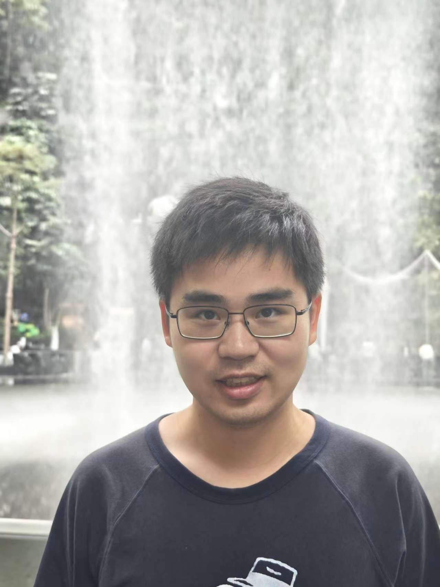

Yifeng Yang
Ph.D. Student in Computer Science
Shanghai Jiao Tong University
About Me
I am a Ph.D. student in Computer Science at Shanghai Jiao Tong University, under the supervision of Prof. Nanyang Ye. My research focuses on confidence calibration, latent diffusion model, vision language Model, etc. Prior to my doctoral studies, I received my bachelor's degree from Tianjin University, advised by Zongbo Han and Prof. Changqing Zhang.
Education
Ph.D. in Computer Science
Shanghai Jiao Tong University, China
2024 - 2029 (expected)
Supervisor: Prof. Nanyang Ye

B.E. in Artificial Intelligence
Tianjin University, China
2020 - 2024
Supervisor: Prof. Changqing Zhang

Research Interests
Confidence Calibration
Latent Diffusion Model
Vision Language Model
Publications
* denotes equal contribution; † denotes corresponding author
ConcealGS: Concealing Invisible Copyright Information in 3D Gaussian Splatting
ICASSP, 2025
CRoFT: Robust Fine-Tuning with Concurrent Optimization for OOD Generalization and Open-Set OOD Detection
ICML, 2024
Services
Conference Reviewer
ICASSP, IJCNN.